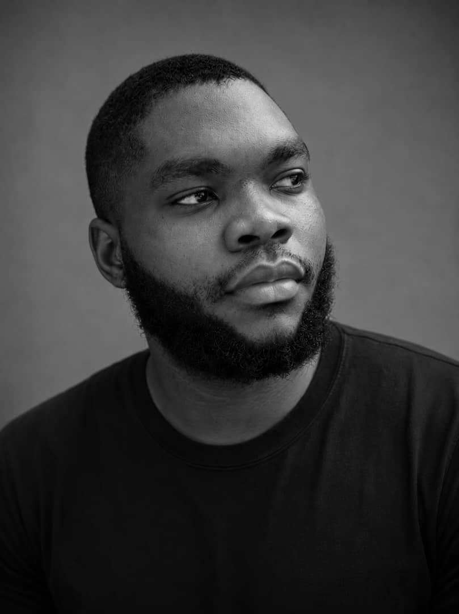

01
Why Data?
I enjoy working with numbers and investigating the details behind them. Football analysis also interests me because statistics, tactics, and evidence can help explain why teams perform the way they do.
A little about me
I'm Obinna Valiance Chukwuemeka, a Data Science student interested in how data, business, and technology connect. I enjoy exploring information, finding patterns, and turning what I discover into useful insights.

01 / My journey
My interest in technology grew from wanting to understand what we can create and discover with it.
I enjoy working with numbers and investigating the details behind them. Football analysis also interests me because statistics, tactics, and evidence can help explain why teams perform the way they do.
My experience as a secretary in a real estate company has helped me develop organisational, communication, record-keeping, and administrative skills. It has also shown me how important accurate information is in everyday business activities.
02 / Education
MIVA Open University
May 2026 – Present
Developing my understanding of data, analytical thinking, and the technologies used to turn information into meaningful insights.
03 / What I work with
A growing toolkit for exploring data, communicating findings, and solving practical problems.
Intermediate knowledge, with an interest in using Python for data exploration and analysis.
Working with structured data and querying information to investigate questions and uncover insights.
Organising information, working with spreadsheets, analysing data, and building dashboards.
Creating dashboards that communicate business performance and help people explore key metrics.
Researching questions, interpreting results, identifying patterns, and presenting findings clearly.
Administrative experience, record keeping, coordinating activities, and communicating information.
04 / Learning by doing
I enjoy applying what I learn to practical analysis and visualisation projects.
A Power BI project exploring sales performance, revenue, gross margin, products, and territories through key performance indicators and visual reports.
Explore my projects →A data analysis capstone involving SQL, Excel, dashboard development, research, and presentation of findings and recommendations.
Explore my projects →05 / Professional growth
I've been building practical experience while continuing my education.
06 / Outside the numbers
I enjoy following football and exploring the analysis, statistics, and tactical decisions behind the game.
I'm fascinated by intelligent systems and the possibilities that emerge when data and technology work together.
I like exploring unfamiliar topics, asking questions, and learning how things work.
Gaming and creative technology give me another way to explore ideas, systems, and problem-solving.
07 / Looking ahead
My immediate goal is to keep strengthening my data analysis skills and building useful projects. Over time, I want to explore deeper areas of data science and artificial intelligence. Inspired by ideas like JARVIS from Iron Man, I'm curious about how intelligent technology could help people solve real problems, including challenges involving nature and the environment.